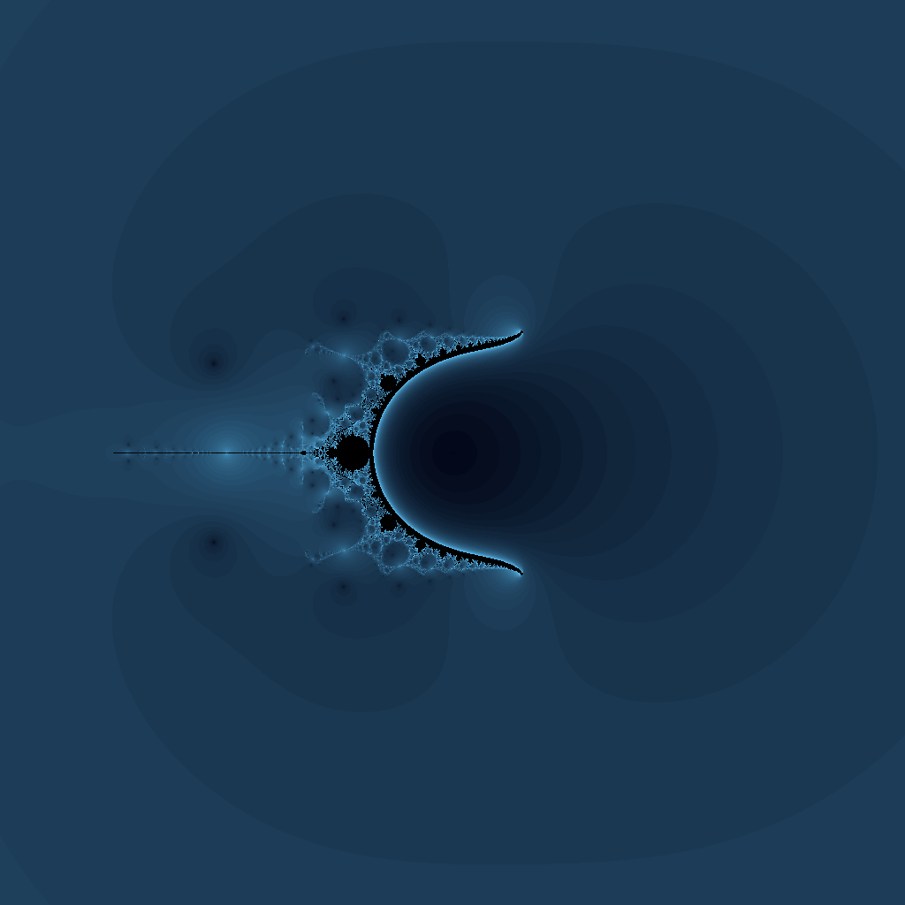
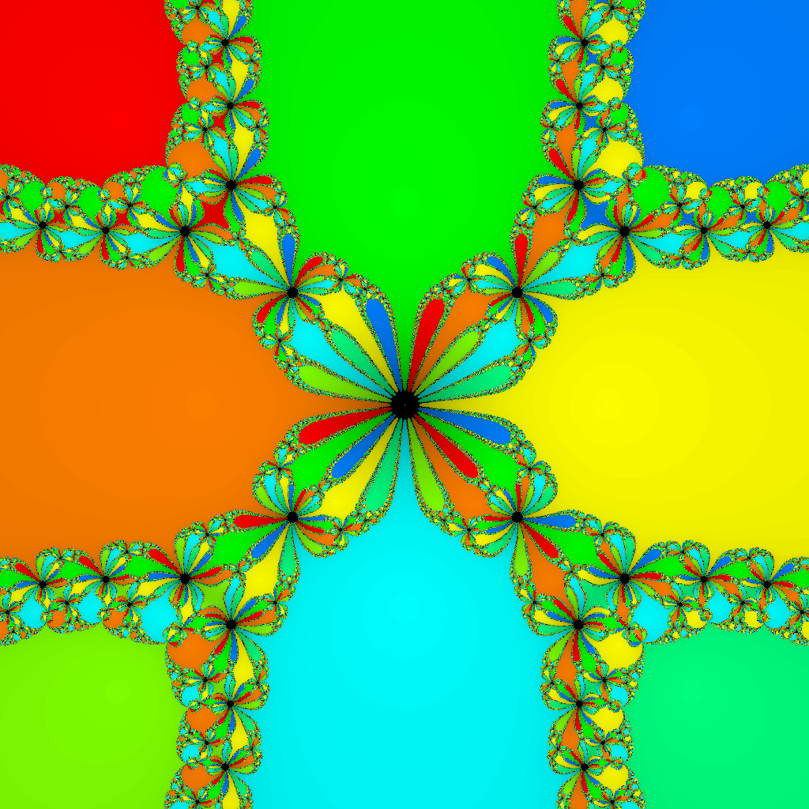
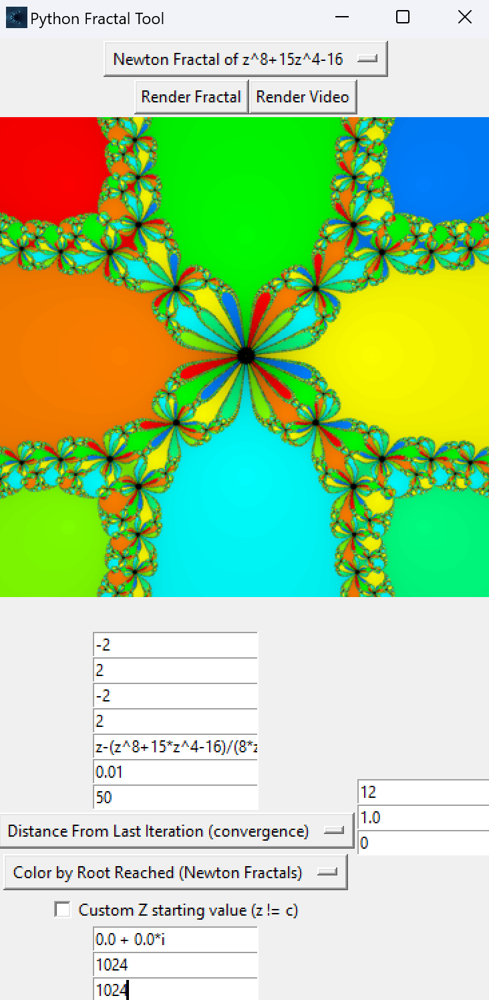

CURRENTLY IN DEVELOPMENT!
Python Fractal Tool
A Python-based desktop application to generate fractal
images from complex dynamics.


 fractal centered at -0.188, 0.235. Looks like a spiral made of teardrop shapes. A higher iteration count would result in a 'noisier' image, due to extremely fine details; a fractal from a function as fast-growing as tetration, of course, displays very chaotic behavior. At 100 iterations the spiral pattern is more prominent.")
Features:
Input your own custom fractal equations.
Render fractal morph videos by using the "t" variable in your equation (note: you will have to convert the rendered frames to a video yourself via FFmpeg or a similar tool).
Color images by escape time—for Mandelbrot-like fractals—or by root reached—for Newton fractals.
